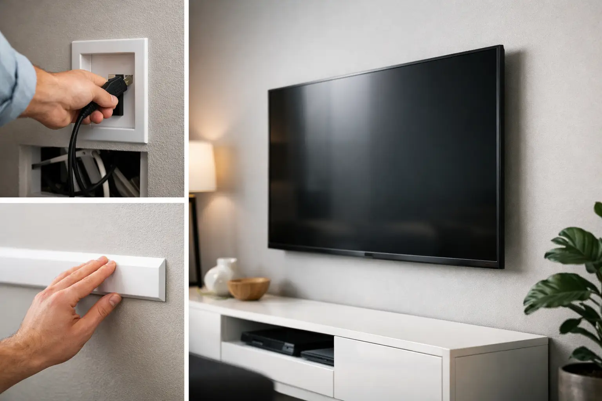

Wall Mounted TV Cord Concealment Done Right
By Vitalii Nestorenko · September 12, 2026 · 6 min read
A newly mounted TV can look sharp for about five minutes - right up until the power cord, HDMI cable, and streaming-device wires start hanging down the wall. Wall mounted TV cord concealment turns that unfinished look into a clean, intentional setup, but the right method depends on your wall, your equipment, and whether you rent or own.
The goal is not simply to hide wires. A good installation keeps cables protected, avoids unsafe shortcuts, leaves enough access for future changes, and puts the screen at a comfortable viewing height. That is where a little planning saves a lot of patching later.
Start With the Cords You Actually Need
Before choosing a concealment method, look behind the TV and identify what needs to travel to the lower cabinet or outlet. Most setups need a power cord and at least one HDMI cable. Others may include an optical audio cable, Ethernet cable, antenna cable, USB lead, or cables for a soundbar, gaming console, or cable box.
This is the point where many homeowners make the wall look clean but make their equipment difficult to use. If your game console, cable box, or receiver will sit in a media cabinet, plan enough cable length to pull the cabinet out and reconnect devices without straining anything. If you are using a soundbar, decide whether it will be wall mounted, attached below the TV, or placed on furniture. Each choice changes the cable route.
It also helps to use quality, appropriately sized cables before the wall is closed or covered. A too-short HDMI cable or bulky adapter can create a problem that is harder to fix once the TV is mounted.
Wall Mounted TV Cord Concealment Options
There is no single best solution. The cleanest option is not always the most practical, especially in a rental, condo, or finished basement with limited wall access.
Surface-mounted cord covers
A paintable cord cover is the fastest, least invasive option. It is a slim channel that mounts over the wall surface, guiding cords from the TV to an outlet or media cabinet. Once painted to match the wall, it becomes far less noticeable from normal viewing distance.
Cord covers work well when you need a same-day improvement without opening drywall. They are also a sensible choice for renters because they can often be removed with minor touch-up work. The trade-off is that the channel is still visible up close, and larger bundles of cables may require a wider cover than expected.
For a tidy result, the cover should run straight, use clean corners, and stop in a logical location. A crooked cover or one crammed with loose cords can look worse than exposed cables.
In-wall low-voltage cable pass-throughs
For HDMI, Ethernet, speaker wire, and other low-voltage cables, an in-wall pass-through system can create a much cleaner result. Two wall plates are installed: one behind the TV and one near the media cabinet or lower wall area. Cables pass through the wall cavity between them.
This option removes the visible cable bundle while keeping equipment connected below. It is especially effective on standard drywall over wood studs, provided there is a clear route between the two openings.
The main limitation is what may be inside the wall. Studs, insulation, blocking, plumbing, electrical wiring, and exterior-wall vapour barriers can all affect the route. A professional checks for these conditions before cutting, rather than assuming there is an open path from top to bottom.
In-wall power relocation kits
A TV’s factory power cord should not be run loose inside a wall. Neither should a standard extension cord. Power needs to be handled using an approved solution installed according to product instructions and applicable electrical requirements.
An in-wall power relocation kit generally creates a proper power connection behind the TV, with a lower connection point near the existing outlet. This lets the TV plug in behind the screen while the lower portion connects safely to power. Depending on the work required, local electrical rules and licensing requirements may apply, so this is a job to assess carefully instead of treating it as a basic cable-hiding project.
If you want the truly wireless look, this is often the right direction. It costs more than a surface cover, but it avoids the most common issue with DIY installations: hiding low-voltage cables neatly while leaving the power cord exposed.
Moving the outlet behind the TV
In some homes, placing a dedicated receptacle behind the TV is the cleanest long-term option. It makes particular sense during a renovation, when drywall is already open, or when building a feature wall around the screen.
This approach can also make sense for a TV that will stay in place for years. It requires properly planned electrical work, and the wall location must still allow for the TV mount, studs, and brackets. A receptacle installed where the mount needs to sit is an avoidable headache.
What Can Go Wrong With DIY Cable Hiding
The biggest concern is safety. Cords that are not rated for in-wall use can overheat or become damaged without anyone noticing. Drilling blindly can also hit electrical wiring, plumbing, or framing. Even a small hole in the wrong place can turn a simple TV project into drywall repair and an unexpected service call.
Appearance is the other common problem. TV mounts are often installed too high because people centre the screen on the wall rather than setting it for seated viewing. Then the cord route becomes longer and more obvious. As a general starting point, the centre of the screen should be close to seated eye level, though a fireplace wall, room layout, and screen size can change that recommendation.
A third issue is access. If all cables disappear inside the wall without a practical way to pull replacements through, changing from an older HDMI cable to a newer one can mean opening the wall again. Leave a pull string in the route when possible, and avoid packing cables so tightly that they cannot move.
Special Considerations for Calgary Homes
Many Calgary homes have finished basements, exterior walls with insulation and vapour barriers, or fireplace feature walls with limited space behind the drywall. These details affect the safest cable route. An exterior wall is not always the ideal place to fish cables, because disturbing insulation or the vapour barrier can lead to more repair work than expected.
Condo owners and renters should also check building rules or lease requirements before cutting drywall or altering outlets. A paintable cord cover may be the better solution when permanent modifications are not permitted. Landlords often appreciate a neat, reversible option that improves the unit without creating maintenance issues later.
For fireplace installations, heat is another factor. The TV should be positioned according to the fireplace manufacturer’s clearances and the actual heat produced by the unit. Concealing cables does not solve a TV placement problem caused by excessive heat or an awkward viewing angle.
A Clean Installation Is More Than Hidden Wires
A professional TV mounting visit should consider the full setup: stud location, mount rating, TV weight, viewing height, cable paths, soundbar placement, and the location of nearby power. The best result is one where the screen feels secure, the cords are controlled, and nothing looks improvised.
Nestor’s Home Help can assess the wall, mount the TV securely, and help choose a practical cord-concealment approach for homes in Calgary, Airdrie, Okotoks, and Cochrane. For electrical work beyond a basic mounting scope, the work should be handled through the appropriate qualified professional.
If your current setup has cables draped across the wall, start by deciding whether you need a quick cosmetic fix or a long-term built-in finish. That one decision will point you toward the right method and help your TV wall look like it was planned that way from the start.
Vitalii Nestorenko is the owner of Nestor's Home Help, a licensed and insured handyman business in Calgary. He holds a Master's degree in mechanical engineering and does every job himself.